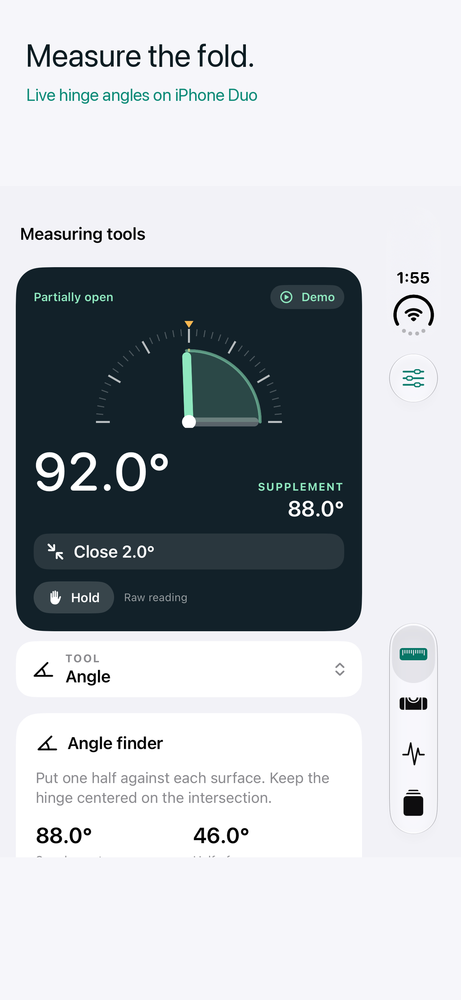
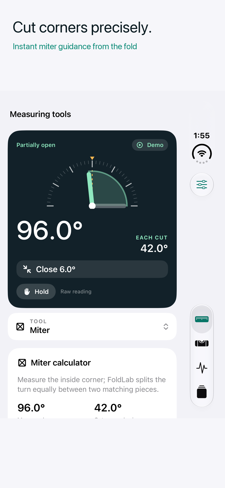
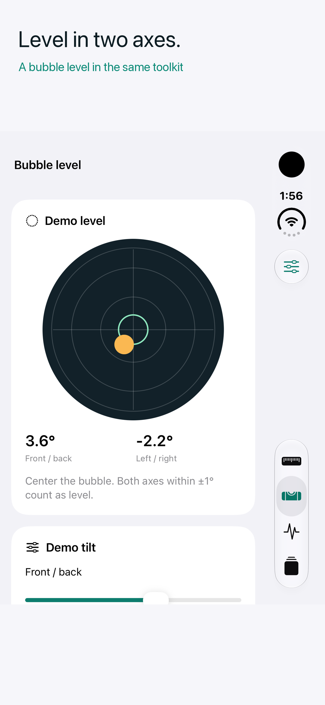

FoldLab Help & support
Live measurements
Live hinge measurements require supported iPhone Duo hardware and iOS 27.1 or later. Move the hinge gently to receive the first reading. A device without a supported hinge can use the bubble level and the clearly labeled demo mode. Never force the hinge or use the device against sharp, hot, or powered equipment.
Try the tools
Open Settings and enable Demo mode to use manual angle and tilt sliders. Demo records stay separate from live records. Advanced tools require Pro in both modes. The outer display companion appears only when supported and made available by the system.
Restore Pro
Open Settings → FoldLab Pro → Restore purchases using the Apple Account that made the purchase. If the price is unavailable, check your connection and choose Retry App Store connection. A pending purchase unlocks Pro only after Apple approves it. Pro is a one-time purchase, with no subscription.
Photos and permissions
Reference photos are optional. If camera permission is denied, enable it for FoldLab in iOS Settings or use Choose photo. Deleting a saved reference photo does not delete the original in Photos.
Measurement limits
Displayed decimal places are not a guarantee of accuracy. Verify results with a dedicated instrument when precision matters. Joint / ROM readings are personal observations, not medical assessments. Hinge observations do not certify mechanical health. The bubble level measures one device plane.
Get help
Use the support link on FoldLab's App Store page. Include the app version, device model, iOS version, whether you used live or demo input, and the steps that led to the issue. Share reference photos only if you choose to.
See FoldLab in action
These iPhone Duo simulator images use clearly labeled demo input. Live angles require a supported hinge.


